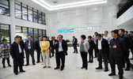

漕泾河企业园区
大事件
2017年
-

01 月
东方美谷核心区——临港漕河泾科技绿洲(南桥)园区正式开园。
-
02 月
东方美谷核心区——临港漕河泾科技绿洲(南桥)园区正式开园。
-
03 月
东方美谷核心区——临港漕河泾科技绿洲(南桥)园区正式开园。
配套服务
作为上海南部新型的生产性服务业功能区，园区坐拥奉贤南桥成熟配套之利，百联南桥购物中心、南郊宾馆等一系列现代化城市公共设施，使园区在建立之初就具备了成熟的都市化商业、餐饮、娱乐等配套服务功能。
There are a lot of supporting facilities around Caohejing Nanqiao Business Park including shop-ping mall,hotel,restaurant,shool,hospital,residential apartment and villas,etc.